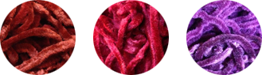

The Season 18 Scarf

THE CHENILLE SCARF (08/07/2014)
June Hudson created the new design that was no doubt part of John Nathan-Turner's vision for a more polished production. It's the big one, but thanks to a width of only 42 stitches and aran weight yarn, it knits fairly quickly - unless you're lucky enough to find chenille yarn, which can be troublesome to knit.
There were also some scarves knitted for exhibition, but there are no plans to include those patterns here.
The pattern has sections that are actually sequences of single color rows instead of the usual 2-row/single color ridges. This was ignored by the official BBC pattern (officially wrong) and largely unnoticed by fans until things were set right by scarf enthusiast and classic Doctor Who artist Alister Pearson, who has contributed greatly to this section of the site. It's amazing that there are still things left to sort out about this scarf after all these years.
Knitting techniques and Colours
TASSELS (09/16/2013)
Yet another quandary has been solved. Well, something closer to the truth anyway. Previously the recommendation was 14 tassels spaced evenly on 42 stitches, but it appears there are actually more. The new plan is a whopping 21 tassels! It's practically fringe. Create each of these mini tassels with one strand of each color. Tie them to every other stitch to space evenly. The tassels appear to have been tied on backwards as well. The loop that the strands are pulled through is on the back rather than the front. This is a very minor detail (possibly an error by the original knitter).
CROCHETED BORDER
The edges of the scarves have a crocheted slip stitch border along the length of each side in rust. The S18B scarf sometimes appears to have only one border, but it is merely the border curling towards the front side of the scarf. Look closely in the photo of Janet Fielding below, and you can see the rust yarn peeking through the back near the edge where the border can't otherwise be seen. Some exhibition versions of the scarf have a purple border.
See more about crocheting the edge here.
COLORS (07/01/2013)
A recent review of the original yarn samples for this scarf has been helpful in curbing some misconceptions about the colors. Generally, the rust is quite close to the red in the original 7-color scarf only slightly more orange. The wine is a very slightly violet burgundy (not too purple, though). The purple is virtually the same as that of the original 7-color scarf. The important thing to remember is that the contrast between these colors is low.
The original yarn information has been hiding in plain site right on the old pattern distributed by the BBC in the 1980s. These are Sirdar Chenille (acrylic/wool blend) 523 Rust, 525 Wine and 526 Plum. Though there might have been color reformulation, Sirdar continued to use identical color number designations at least through the 1990s for all chenille. The core is black rather than the same color as the pile fibers. It is slightly glossy. Samples of indeterminate year have been used for making the color suggestions on this page. They're a very good indicator of what the colors should most likely be.
I've noticed that many fans' replicas get the wine wrong. It ends up being far too red. This is reinforced by two things. First, the reflective nature of chenille fiber causes "bloom" on film. This brightens and shifts the hue in photos to the familiar deep red (see the photo of Janet Fielding below with this effect). Second, Lion Brand Suede was a popular yarn choice (now discontinued) for knitting replicas, and one color concession was that a deep red had to be subbed for the true burgundy. Unfortunately, the Lion colors continue to influence.
Under decent lighting and without color grading, the colors on video are truer in relation to each other (hues shift but equally) than vintage film or print. It's not reliable enough to actually choose colors by, but the unaltered screen grabs below give a better sense for how this scarf should look.
You can also use free paint chips found in hardware stores as a guide. These by Behr are quite close.
|
rust |
PPU2-2 Red Pepper |
YARN RECOMMENDATIONS(08/07/2014)
If you can find aran weight Sirdar chenille, well, lucky you! The next best thing will be locating some Crystal Palace cotton chenille in the hopelessly discontinued colors of 5137 Cinnabar, 4021 Red Velvet and 9719 Plum. Cinnabar and Red Velvet will be a bit lighter than the real thing, and the weight of this yarn is thinner (only worsted).
Lion Brand Suede is a little heavier than the right weight and has pretty good colors - Garnet, Eggplant and Spice. The contrast was a little too high between the colors, Eggplant needed to be more of a red-violet. Garnet is too light and red. Spice is exactly perfect. You will need to hunt for it on eBay and elsewhere as it is no longer produced.
Casco Bay Cotton Chenille (06/12/2015)
In spite of no spot on color matches, this is probably the best overall option that is currently available. Order the aran weight option and probably knit on a US #8. Overall the palette runs a bit lighter than the actual scarf, and the purple hue is a bit too maroon.
| colour | colour-code | comments | rust | 113 | a bit orange and too light |
|---|---|---|
| wine | 208 | too light |
| purple | 119 | too light and reddish |
Worsted Acrylic (08/07/2014)
If you can't get chenille, at least get some great colors. Experiment with needle sizes or the number of stitches to reach the desired width. These selections are a wee bit under aran weight.
|
rust wine 1 purple 1 purple 2 purple 3 |
Knit Picks Brava Worsted Knit Picks Brava Worsted Red Heart Soft Yarn Deborah Norville Everyday Soft Worsted Knit Picks Brava Worsted |
25719 Paprika 25701 Wine 3729 Grape 10 Aubergine 25720 Currant (lower contrast with wine) |